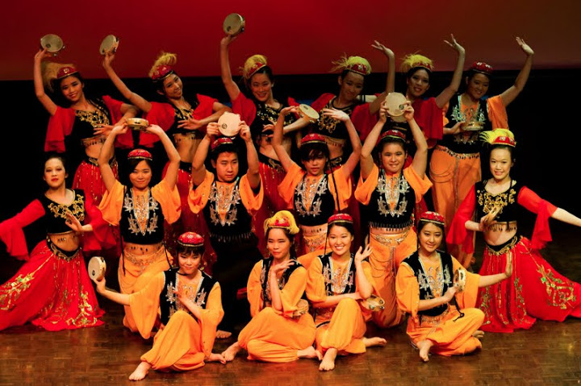
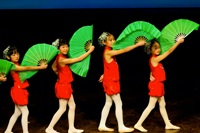
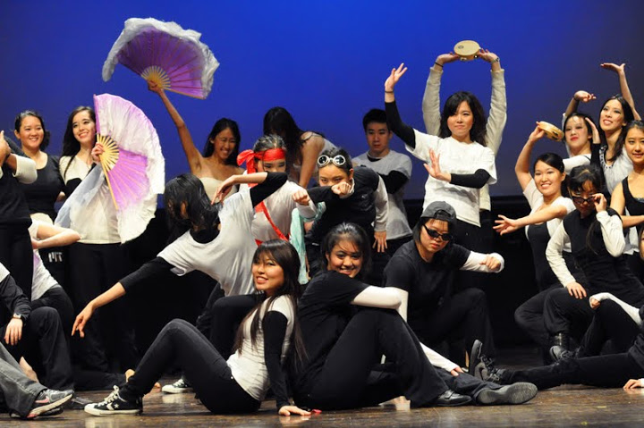
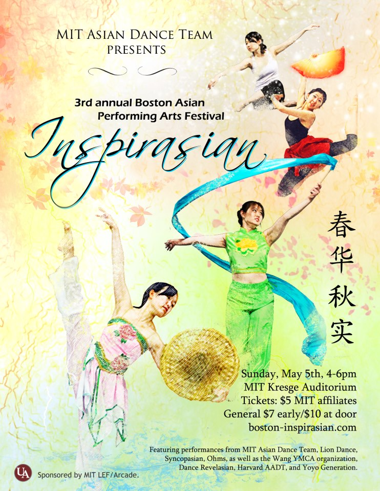
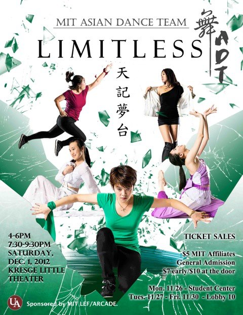

Unforgettable
The MIT Asian Dance Team Fall 2011 showcase, Unforgettable, was a 16-piece program beginning with a traditional Xinjiang tambourine piece and culminating with an Asian fusion piece entitled "East Meets West." Among the other pieces showcased were a traditional Dai piece, a tribal Va piece, and a sexy kpop piece.
Click to see the photos and watch the videos!
|  |  |
|
| 01 - Tambourines Through the Flames | 02 - Rhythm of the Drums (Guest) | 03 - Dr. Feel Good |
 |
 |
|
| 04 - Lion Dance (Guest) | 05 - Bamboo Rain | 06 - Maiden (Solo) |
 |
||
| 07 - True Love True Beauty | 08 - Digital Bounce | 09 - Memories in the Wind |
 |
||
| 10 - MIT Chinese Ensemble (Guest) | 11 - Impressions of Va Mountain | 12 - Love Like Oxygen |
 |
 |  |
| 13 - Dream in Boudoir (Solo) | 14 - Village Girl (Guest) | 15 - Valenti |
|  | ||
| 16 - East Meets West |
Photography courtesy of Kojo Acquah and Joseph Lee
Previous Showcases
Click on the images below to learn more about our other showcases! Feel free to also browse our photo gallery and performance videos!
|  |  |  |
| Inspirasian | Limitless | Inspirasian |
| Spring 2013 | Fall 2012 | Spring 2012 |
 |
 |
 |
| Unforgettable | Inspirasian | Resonant Blue |
| Fall 2011 | Spring 2011 | Fall 2010 |
 |
||
| Phoenix Rising | ||
| Spring 2010 |